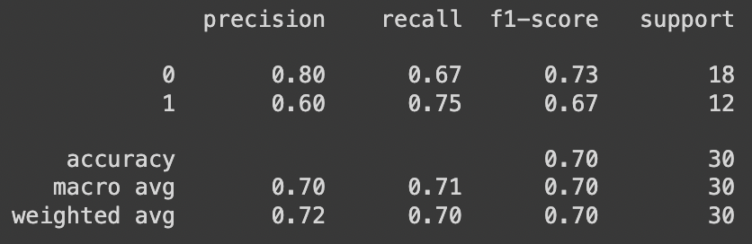

Results
LSTM Model with Sentiment Analysis
LSTM Model
Two LSTM models were employed to predict stock movement, each utilizing different input features. Model 1, employing the functional API with two inputs—previous 5 days' closing prices and the average Twitter sentiment of the preceding day—demonstrated robust performance. For the negative movement class, it achieved a precision of 0.80, recall of 0.67, and an F1 score of 0.73, while for the positive movement class, it exhibited a precision of 0.60, recall of 0.75, and an F1 score of 0.67. The overall accuracy of Model 1 was reported at 0.70. In contrast, Model 2, which solely relied on previous 5 days' closing prices, displayed comparatively weaker results. For the negative movement class, it yielded a precision of 0.71, recall of 0.28, and an F1 score of 0.40, while for the positive movement class, it demonstrated a precision of 0.43, recall of 0.83, and an F1 score of 0.57. The overall accuracy for Model 2 was notably lower at 0.50. The superior performance of Model 1 underscores the importance of incorporating Twitter sentiment data, as it contributes to higher precision and recall in predicting stock movements compared to the model relying solely on historical closing prices.